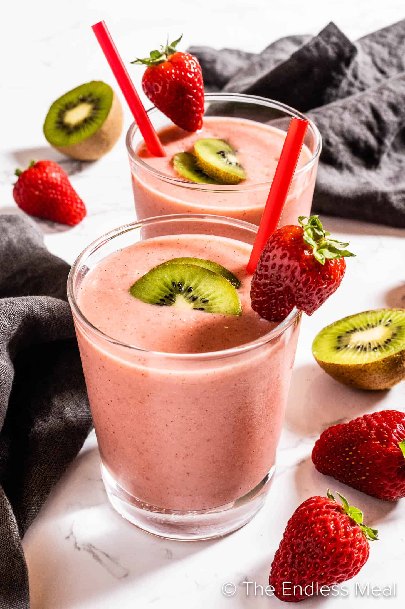

Smoothie Recipe

Description
Indulge in the refreshing goodness of our Strawberry Smoothie, a delightful blend of ripe strawberries and creamy goodness. Packed with natural sweetness and a smooth texture, it's the perfect fruity treat to kickstart your day or enjoy as a tasty pick-me-up.
Ingredients
- ¾ cup pineapple and orange juice blend
- ½ cup vanilla frozen yogurt
- 1 banana
- 6 strawberries
- 1 kiwi
Steps
- Place juice blend, frozen yogurt, banana, strawberries, and kiwi into a blender. Blend until smooth and pour into 2 glasses.